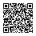
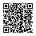
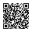
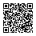
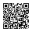
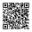

Verified HTTP/SOCKS proxies
Tested subscription

Scan to import
iran-verified-proxies.txt Open in HAPPhttps://nimadn.github.io/iran-proxy-feed/iran-verified-proxies.txt
Conventional HTTP, SOCKS4 and SOCKS5 proxies are collected from several sources, deduplicated and tested.
A conventional proxy is published only after:
Previously verified proxies remain available for up to 30 days after their most recent successful test.
Scan a QR code with Hiddify or another compatible client, open the feed URL, or send it directly to HAPP.
Tested subscription

Scan to import
iran-verified-proxies.txt Open in HAPPhttps://nimadn.github.io/iran-proxy-feed/iran-verified-proxies.txt
Plain-text subscription

Scan to import
iran-verified-proxies-plain.txt Open in HAPPhttps://nimadn.github.io/iran-proxy-feed/iran-verified-proxies-plain.txt
Unverified OpenRay subscription

Scan to import
iran-openray.txt Open in HAPPhttps://nimadn.github.io/iran-proxy-feed/iran-openray.txt
Plain-text OpenRay list

Scan to import
iran-openray-plain.txt Open in HAPPhttps://nimadn.github.io/iran-proxy-feed/iran-openray-plain.txt
Verified proxies plus OpenRay links

Scan to import
iran-combined.txt Open in HAPPhttps://nimadn.github.io/iran-proxy-feed/iran-combined.txt
Plain-text combined list

Scan to import
iran-combined-plain.txt Open in HAPPhttps://nimadn.github.io/iran-proxy-feed/iran-combined-plain.txt